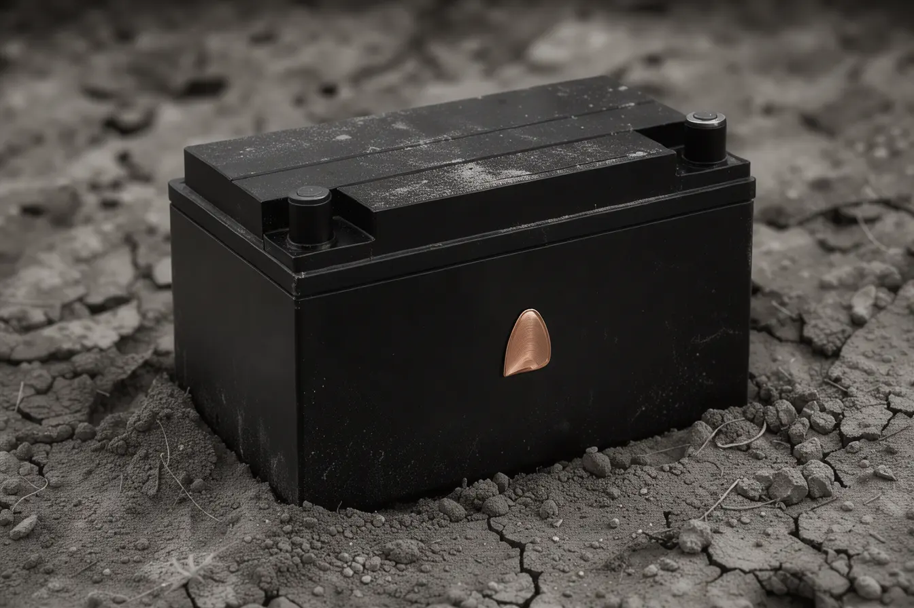
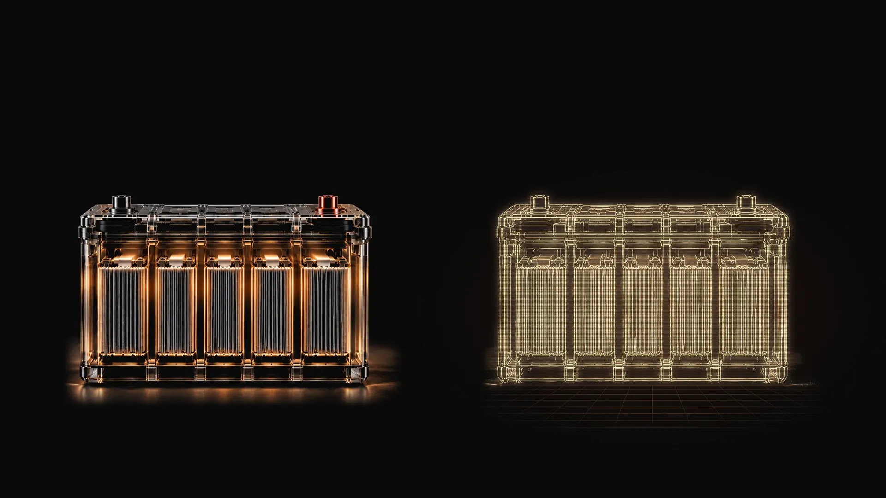
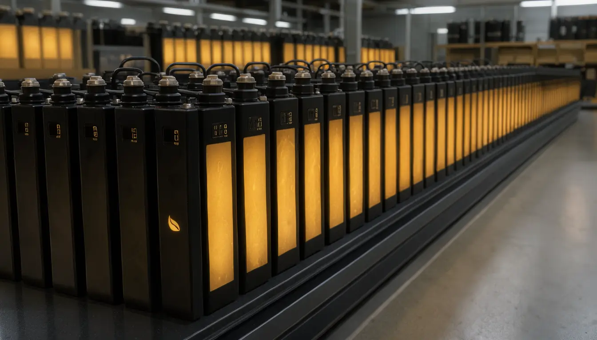

Built for 10 years. Replaced at 5.
We look after your batteries so they last longer and cost less.
The life gauge
With Superseed: close to the full 10 years
For telecom operators, vehicle fleets, data centres, malls and factories.
What is this costing me?
You are buying every battery twice.
- Batteries are built to last 10 years. Most are replaced at 5.
- Whole sets are thrown out the day the warranty ends, even the good ones.
- Every replacement also costs you a technician, a truck and downtime.
Battery maker's own figures: EnerSys (10-year design life, 5 to 6 years in service).
Why do my batteries die so early?
Heat, bad charging, being drained too far, and no check-ups. And nobody is watching.

Every 8 °C above 25 °C cuts a battery's life in half (Schneider Electric).
So what does Superseed actually do?
We look after your batteries for you, so your team doesn't have to.
The field
Site visits: only where a battery needs it.
Jobs you stop doing
- Sending people to check every site
- Keeping warranty dates in spreadsheets
- Replacing whole sets at once
- Filing recycling paperwork
We watch every battery, fix problems early and replace a battery before it can stop your business.
How do you know when a battery has a problem?
A small tracker on each battery tells us how healthy it is, every day.

It checks each of the six cells inside the battery, not just an average.
- Will fitting it stop my business?
- No. It takes a few minutes per battery. Vehicles are done after their shift; backup batteries are fitted while they keep working.
- Do you track my vehicles or drivers?
- No. Only the health of the battery.
How much will I save?
You replace one battery at a time, not the whole set.
Today: all 10 replaced when the warranty ends
With Superseed: only the weak one is replaced, with a matching battery at about half the price.
One telecom battery set: about $1,055 a year today, about $445 with Superseed.
Our estimate for a UAE telecom site. We'll work out yours in the pilot.
Same backup. Fewer batteries bought. No battery team.
What happens to the old batteries?
We give them a second life.
The second-life line
Batteries other companies throw away still have years left. We test them in our lab, give them a new warranty and sell them at about half the price of new.
The battery we take out of your set? It comes back to you as a spare.
At the very end, every battery is recycled properly, and you get the record.
Millions of batteries are thrown away early every year. Confirm wording with Yash
Dubai plant opening soon Confirm
Who handles the paperwork?
We do. Every battery's full history is kept for you.
Battery service book
- Digital ID
- Scan record
- Readings
- Reading history
- Fixes
- Service log
Lab and retirement
- Lab visit
- Test record
- Retirement
- Retirement date
- recovered: lead · plastic
- Lead weightPlastic weight
When it was bought, every check, every repair, when it was replaced and how much lead and plastic was recovered when it was recycled.
The reports your auditors and sustainability team ask for, ready when they ask.
Your questions
Does it work with the batteries I already have?
We fit the tracker to your existing batteries. Confirm which makes
Who does the work on site?
We do: our engineers handle the checks, fixes and replacements.
What if a battery is about to fail?
We see it coming weeks or months ahead, because batteries weaken cell by cell, and we replace it before it stops your business.
Is a second-life battery as good as new?
Each one is tested in our lab and comes with a new warranty. Confirm warranty length
What does it cost?
The tracker is free for now. The rest is agreed in your pilot.
What if I stop using Superseed?
Your batteries keep working as normal. Confirm removal + data terms
Can I see it working?
Yes. Visit our lab, and bring one of your own tired batteries.
Who is behind Superseed?
People who have spent their careers in energy.
UAE partner · name, role, photo to come
UAE partner · name, role, photo to come
Supersede means to replace something worse with something better. We spell it with 'seed' because a battery, like a seed, only does well when someone looks after it.
How do I start?
Start with one site.

We fit one site with no downtime.
In 90 days you see every battery, how healthy it is and what it is costing you. Then you decide.